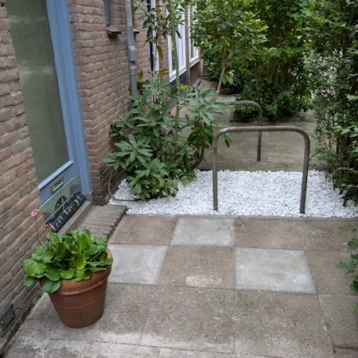
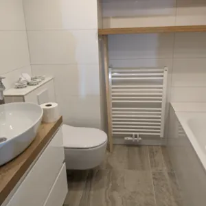

Fijn wonen.
Goed geregeld.
Van een kleine reparatie tot een nieuwe badkamer. Luka helpt u met de klussen in en om uw huis.
Duiven · Arnhem · Nijmegen

Wat we doen
Groot plan of kleine klus.
In huis of buiten. Van onderhoud tot een nieuwe ruimte: we denken graag met u mee.
Ons werk
Werk van Mint.

Onderhoud in de tuin

Terras & toegang

Badkamer & sanitair
Aangenaam, Luka van Mint
Een goed resultaat begint met een goed gesprek.
Een verbouwing of een lijstje kleine klussen: u wilt weten bij wie u terechtkunt. Bij Mint heeft u rechtstreeks contact met Luka. Hij luistert naar uw wensen en denkt praktisch mee.
Laten we kennismaken- 01
Bespreken
U vertelt wat u wilt laten doen.
- 02
Afspreken
Samen bespreken we de aanpak, kosten en planning.
- 03
Aanpakken
We voeren de afgesproken werkzaamheden uit.
Samen aan de slag